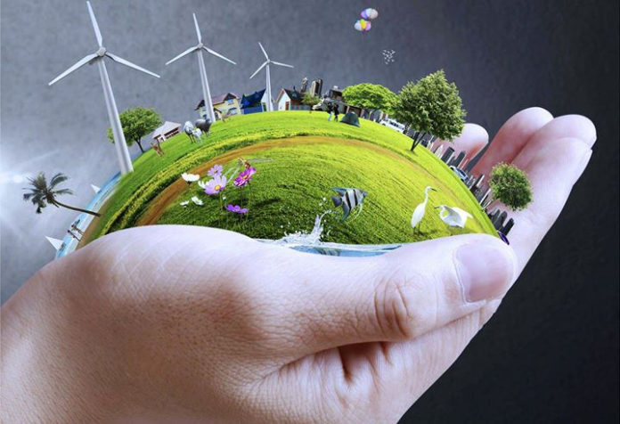

en esta ONG estamos dedicados a la proteccion de mares y bosques donde ofrecemos oportunidad de ayudar ya sea de forma monetaria o prestando voluntariado, para gente de todas las edades incluida la suya de pueda aportar apoyo a la proteccion de ecosistema tenemos sucursales en todos los paises del mundo incluso en el suyo en caso de desar ayudar con voluntariado consulte en ayudas , en caso de quereer ayudar de manera monetaria vaya a donaciones
En el voluntariado es asesorado por uno de nuestros empleados para que le comente a donde ira y que ara tenga en cuenta que su destino sera selecionado dependiendo de su ubicacion ya sea voluntariado para ayudar los bosques o para ayudar a los oceanos y mares
En caso que dese donar tenga en cuenta que no podra tener una devolucion de lo donado, tambien recibira informacion constante de los avances conseguidos gracias a sus donaciones o chequear la pestaña de "informacion diaria" para ver de manera manual los avances de la fundacion
¿Sabias que?
¿Sabía que los bosques cubren casi 1/3 de la tierra a nivel mundial? Lo que equivale a 4 060 millones de hectáreas
Más de la mitad (54 por ciento) de los bosques del mundo se encuentran en solo cinco países: la Federación de Rusia, Brasil, Canadá, los Estados Unidos de América y China
¿Cómo llega la basura al océano? Es vertida, bombeada, derramada, filtrada e incluso lavada con nuestra ropa. Cada año, exponemos las vías fluviales del mundo a una creciente variedad de contaminantes: desechos plásticos, químicos, petróleo crudo y más
La basura del océano puede romperse en pedazos más pequeños, conocido como microplástico, por la exposición al sol y la acción de las olas, y después puede encontrar su camino a la cadena alimenticia. Cuando finalmente se degrada (lo que lleva 400 años para la mayoría de los plásticos), el proceso libera químicos que contaminan aún más el mar
Se estima que desde 1990 se han perdido 420 millones de hectáreas de bosque en todo el mundo lost worldwide a causa de la deforestación, pero la tasa de pérdida de bosques ha disminuido considerablemente. En el quinquenio más reciente (2015-2020), la tasa anual de deforestación se estimó en 10 millones de hectáreas; lo cual supone una reducción si se compara con los 12 millones de hectáreas en 2010-2015
Se estima que hay 726 millones de hectáreas de bosque en áreas protegidas en todo el mundo. La superficie forestal en áreas protegidas a nivel mundial ha aumentado en 191 millones de hectáreas desde 1990
Cuando se arrojan al mar en grandes cantidades, los nutrientes agrícolas como el nitrógeno pueden estimular un crecimiento explosivo de las algas. Cuando las algas se descomponen, el oxígeno de las aguas circundantes se consume, creando una vasta zona desoxigenada que puede resultar en la muerte masiva de peces y otra vida marina
Más plástico en el océano viene de China e Indonesia que de cualquier otro lugar - juntos, representan un tercio de la contaminación de plástico. De hecho, el 80 por ciento de la contaminación plástica proviene de sólo 20 países, incluyendo los Estados Unidos
Afortunadamente, no es demasiado tarde para limpiar nuestras acciones. Comparte la verdad sobre la contaminación del océano y ayuda a marcar la diferencia
